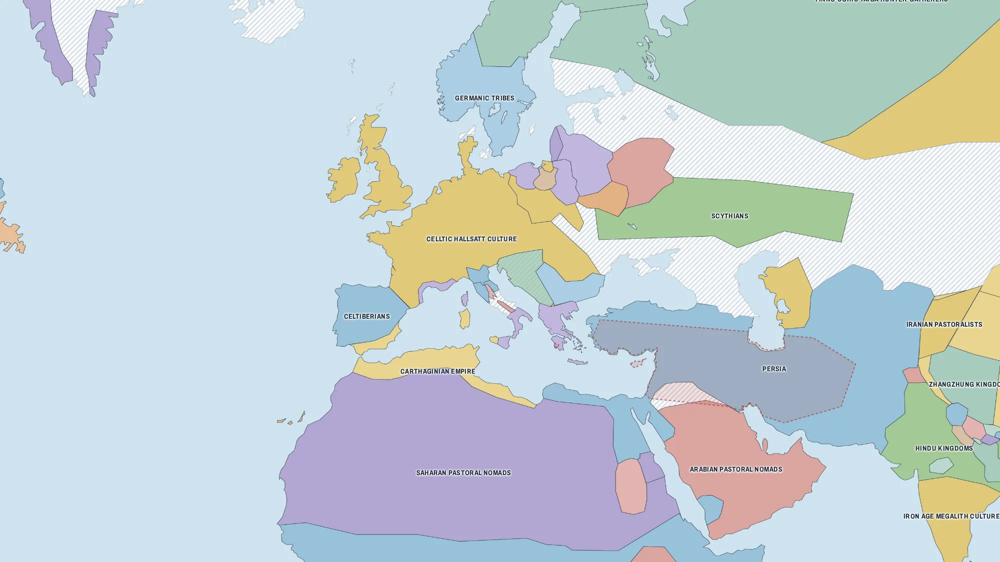
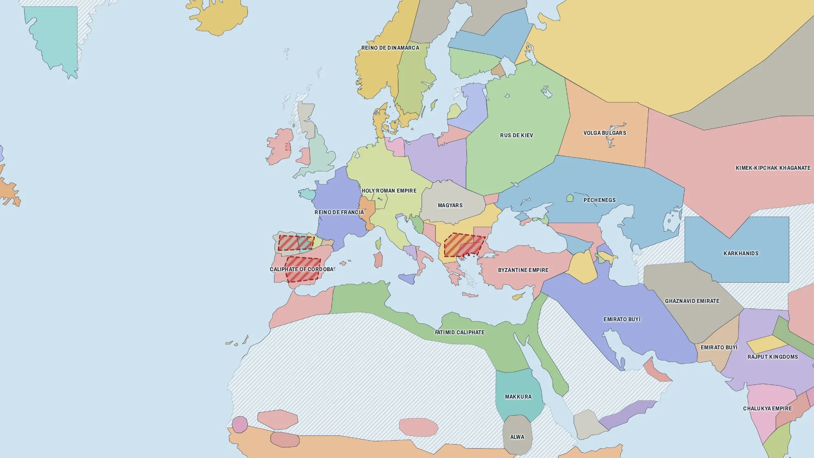
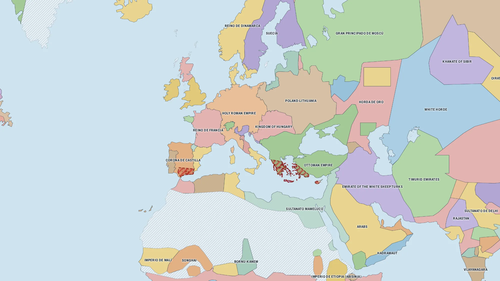
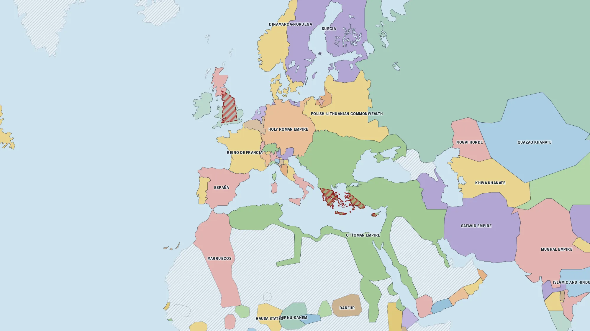
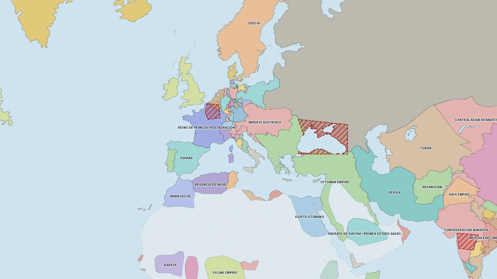
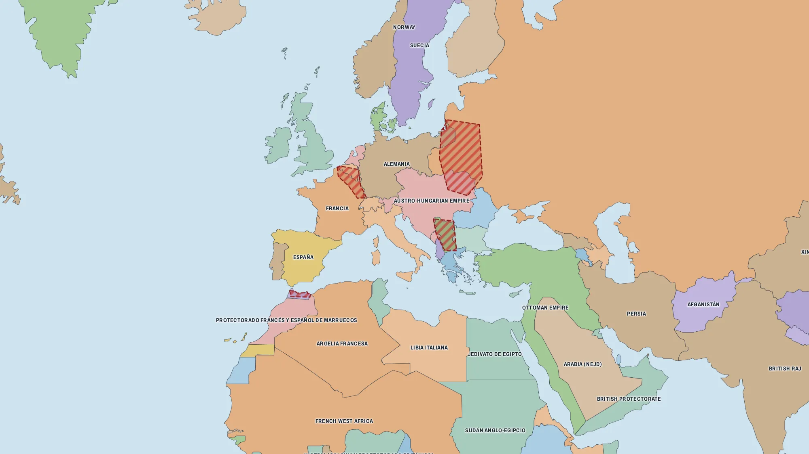
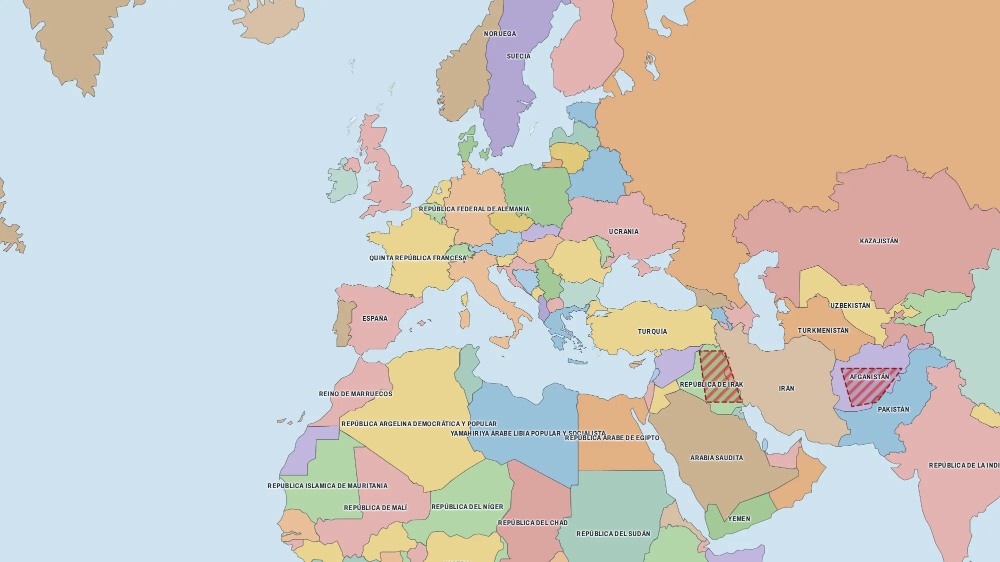
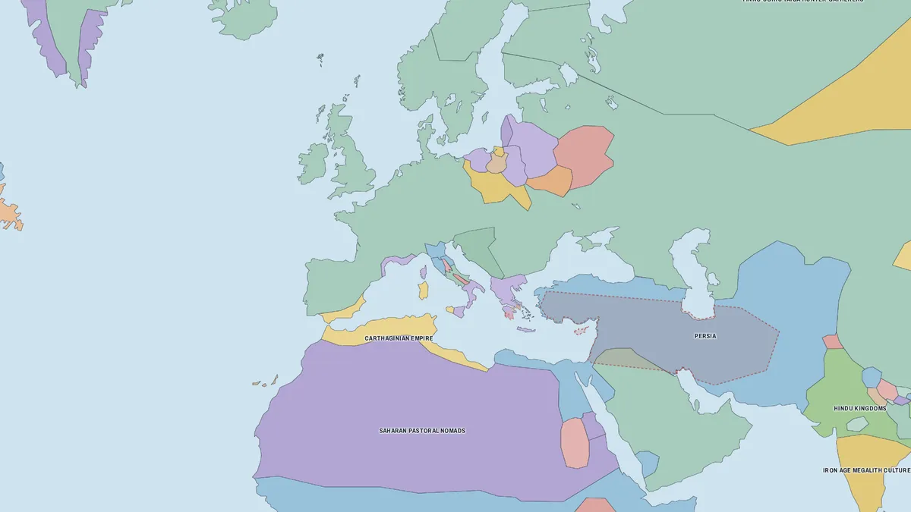
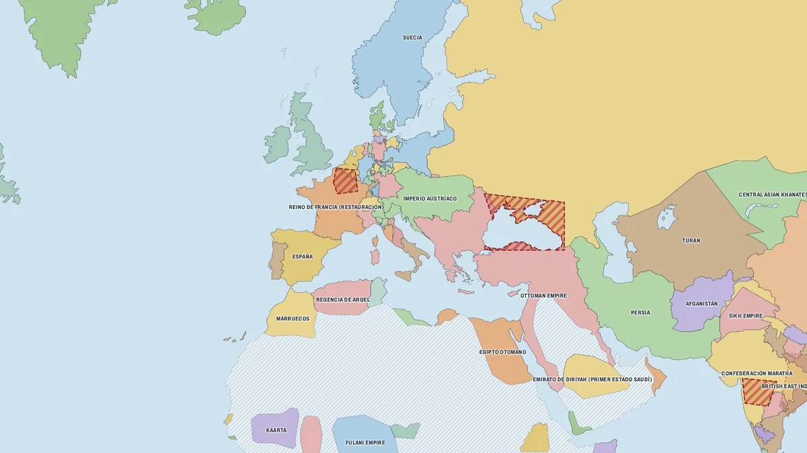
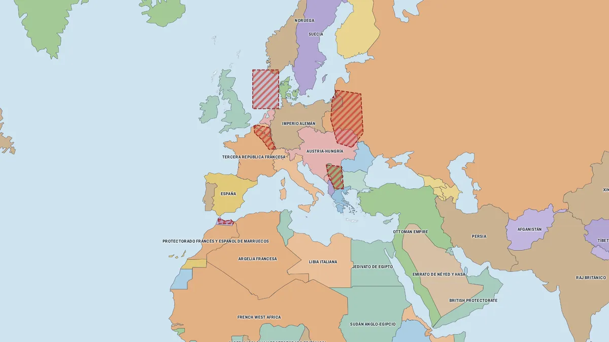

El mundo en 1492
Fronteras, gobernantes, batallas y acontecimientos de cualquier año entre el 3000 a. C. y hoy, cada dato con su fuente.
- Estados y territorios
- Zona de guerra
- Nombre de la época
- Sin datos
Cómo se lee la lámina
Todo lo que aparece en el mapa corresponde al año elegido. Si cambias el año, cambian las fronteras, los nombres y lo que está pasando.
- FronterasCada color es un estado o territorio. Proceden de 106 mapas históricos; entre dos fechas se muestra el último disponible (la barra indica de qué año son las fronteras).
- Congo Belga
- Nombres de entoncesEl rótulo cambia con el año: Congo Belga, Zaire o República Democrática del Congo.
- Ficha al pulsarGobernante de ese año, capital, población, forma de gobierno y fuentes.
- Lepanto
- BatallasLas del año, con bandos, resultado y el conflicto al que pertenecen.
- Zonas de guerraTerritorio en disputa durante un conflicto, rayado en rojo.
- Imprenta
- Acontecimientos e inventosLo que ocurrió cerca de esa fecha y dónde.
- Malta
- Territorios pequeñosIslas y enclaves demasiado pequeños para verse como área, marcados con un punto.
- Sin datosTierra que el mapa de esa época no atribuye a ningún pueblo ni Estado. No estaba vacía: simplemente no hay frontera fiable que dibujar.
- Escudos y banderasLos de cada periodo, cuando existen.
Tres gestos
No hace falta instalar nada ni crear una cuenta. Funciona igual en el proyector, en el ordenador y en el móvil.
-
Elige el año
Arrastra la barra de tiempo, escribe una fecha o salta de batalla en batalla. Prueba con el 480 a. C., en las Termópilas.
-
Pulsa un territorio
Se abre su ficha: quién gobernaba, desde cuándo, capital, población y de dónde sale cada dato.
-
Comparte el momento
La dirección guarda año, lugar y zoom. Quien la abra verá exactamente lo mismo.
…/mapa.html#1492/38.00/-4.00/5
Todos los controles
Reproducir
El tiempo avanza solo y ves crecer y caer los estados.
Saltos
De mapa en mapa, de batalla en batalla o de acontecimiento en acontecimiento.
Buscar
Un país, una batalla o un suceso, y el mapa va al año y al lugar.
Seguir un territorio
Fíjalo y observa cómo cambia su extensión con los siglos.
Capas
Muestra u oculta batallas, zonas de guerra, acontecimientos y rótulos.
Teclado
← → cambian el año; Espacio reproduce.
En el móvil
Los paneles se abren desde abajo y se cierran deslizando.
Láminas para abrir en clase
Cada una es un enlace: proyéctala tal cual o compártela para que cada cual la explore desde su pantalla.



Cada dato, con su fuente
Hoy la lámina reúne 382 estados y entidades, 1051 batallas de 203 conflictos, 457 zonas de guerra, 251 acontecimientos y 35 territorios pequeños.
Las fronteras son aproximadas: resumen situaciones que a menudo fueron difusas o disputadas. Los datos son orientativos y pueden contener errores: si encuentras uno, puedes corregirlo. Más sobre la exactitud de los datos.
- historical-basemapsFronteras · 53 mapas, corregidos (y 53 derivados de ellos)
- WikipediaFichas y fechas · CC BY-SA
- WikidataGobernantes y coordenadas · CC0
- Our World in DataPoblación · CC BY